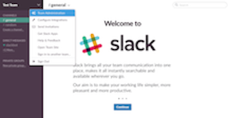
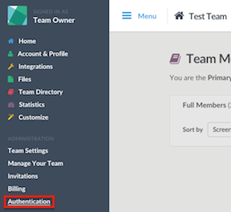
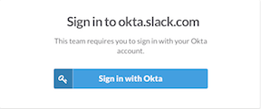

Sign into Slack as a Team Owner and go to Team Administration, as shown below.

Select Authentication in the Menu bar on the left side, as shown below.

Select OKTA under SAML Authentication Settings. 
Copy and paste the following link into the SAML SSO URL field, as shown above.
Sign into the Okta Admin dashboard to generate this value.
Copy and paste the following link to the Identity Provider Issuer field, as shown above.
Sign into the Okta Admin dashboard to generate this value.Copy and paste the following to the Public Certificate field, as shown above.
Sign into the Okta Admin Dashboard to generate this variable.
Note: Slack supports IDP-initiated flow, SP-initiated flow, and Just In Time (JIT) provisioning. For SP-initiated login, go to https://<subdomain>.slack.com where <subdomain> is your organization's Slack subdomain. Then, select Sign in with Okta, as shown below.
